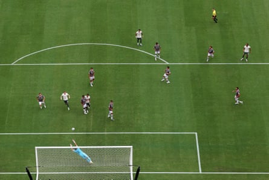
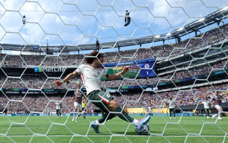

The talk was mostly about Enzo Maresca wanting to add more guile to his attack when Chelsea signed João Pedro last week. Less was made of the former Brighton forward’s ability to crash through an opposition defence. Then again Fluminense made João Pedro and were probably not surprised to find their former star in scintillating goalscoring form in this one-sided Club World Cup semi-final.
Two thunderous finishes from the versatile attacker were enough to ensure that Chelsea will return to the MetLife Stadium to face Paris Saint-Germain or Real Madrid in Sunday’s final. They can make £97m in prize money from this tournament, which is probably just as well given their spending.
Up to £60m has been invested in João Pedro, although in fairness that looks like smart business judging by his first two performances for his new team. This was an impressive way for him to follow up his encouraging cameo against Palmeiras and will tell Maresca that he will have a lot of variety in attack next season.
A special round of applause, too, to Fifa for finding a way to compromise its own product by staging this game with an intense afternoon sun beating down on New Jersey. It is pointless debating whether the people who make these calls have any real love for football. European audiences come first, and scant regard is given towards player welfare. “We are going to try to adapt,” Maresca said, but it was tough with temperatures hitting 35C at kick-off, the humidity high and this roofless stadium far from full.
The concern for Chelsea was that the heat would act as a leveller. Then again, Fluminense are the tournament’s oldest team and hardly relished the brutal conditions. They were firm underdogs and began in tentative fashion, quickly retreating into a low block.
Chelsea were boosted by Moisés Caicedo returning from suspension. Maresca was without the suspended Levi Colwill and Liam Delap but the Italian’s resources are plentiful. Tosin Adarabioyo replaced Colwill in central defence and João Pedro got the nod over Nicolas Jackson up front.
The composition of Chelsea’s attack was intriguing. There was no place for Noni Madueke, who continues to be linked with Arsenal. Pedro Neto switched to the left and Christopher Nkunku drifted in from the right.
João Pedro (top right) watches as his curling shot finds the top corner to open the scoring.Photograph: Buda Mendes/Getty Images
Nkunku’s movement was a positive feature during the first half, while his determination suggests he may yet have a future at the club. Thiago Silva, the former Chelsea centre-back, had his hands full. Cole Palmer’s creativity caused problems and Enzo Fernández had a shot blocked.
Chelsea looked too fast for the Brazilians. There were 18 minutes on the clock when Neto surged down the left. His low cross was half cleared and João Pedro seized possession on the edge of the area.
The 23-year-old did not hesitate to punish his boyhood club. There was no celebration from João Pedro but nor was there any mercy. Having displayed his clever link-up play against Palmeiras, now he showed his technical side, setting himself before putting his laces through a shot that dipped and swerved beyond Fábio to give Chelsea a deserved lead.
The challenge has been laid down to Jackson. He already had competition from Delap but now has the versatile João Pedro blocking his path. Maresca can afford to be ruthless. That said, he still needs his team to become cooler in the final third. Neto, Nkunku and Malo Gusto spurned chances to make it 2-0, offering Fluminense hope of a comeback.
The game was more even when Chelsea’s intensity dipped. Marc Cucurella cleared off the line from Hércules and Fluminense thought they had a penalty when Trevoh Chalobah handled a cross, only for the decision to be reversed after a review by the French referee, François Letexier.
Marc Cucurella clears off the line in 35C heat.Photograph: Héctor Vivas/FIFA/Getty Images
Chelsea had to respond. Fluminense made attacking changes at the start of the second half and almost equalised when Everaldo shot straight at Robert Sánchez moments after coming on. Now, though, there was more space for Chelsea on the break. Fluminense were forced to chase the game and leave gaps at the back. They pushed again, but Chelsea countered. Palmer rode a rough challenge and found Fernández, who sent João Pedro through on the left.
The Brazilian still had a lot to do. He made it look easy. This time João Pedro cut inside, opened up his body and used his right foot to send a rising drive in off the underside of the bar.
Crisp and clinical, Chelsea were on their way to the final. They looked for a third goal, Nkunku twice going close. Jackson came on looking to impress but wasted a late chance, shooting wide. It hardly mattered when Chelsea were so superior, though. The final promises to be far more taxing but the chance to become world champions is within their grasp.